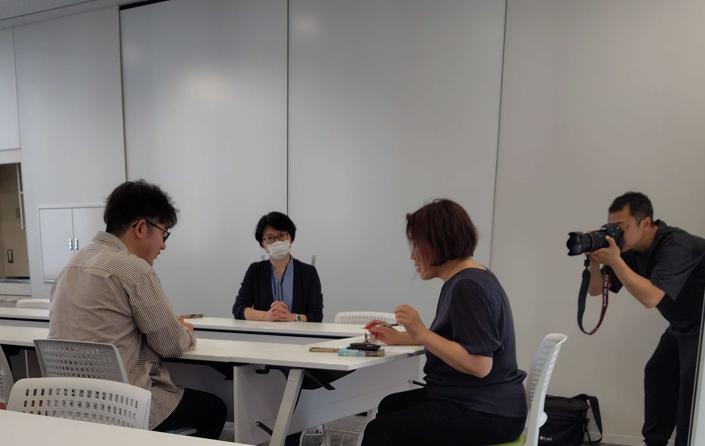

今回は大学のKAIT広報誌様からの取材を受けました。私にとって初めての経験で、上手く話せるか少し緊張していました。ですが、当日は取材担当の方々がにこやかに対応してくださり、安心して受けることができました。

今回の取材では厚木市制70周年式典での受賞や、今後の団体活動での展望についてお話しさせていただきました。
特に厚木市制70周年式典での受賞に関して正直なところ、受賞の報を受けた時も式典に出た時も、私たちの活動が評価されたという事実を客観的に受け止めきれずどこか他人事のように感じていました。
しかし、取材中に改めて自分の言葉で思いを紡いでいくうちに、私たちのこれまでの活動が、厚木市という大きな舞台で評価されたことの重み、そして今回の賞がいかに輝かしいものであったかを実感し、感慨深い気持ちになりました。
そのため、今回の取材は私たちの活動を見つめ直すいい機会となりました。
普段私たちの活動を外から見る機会はあまりないため、質問に答える中で客観的な視点を得られたのは貴重な経験でした。
この取材で改めて抱いた思いを胸に、今後の活動により一層注力していきたいです。